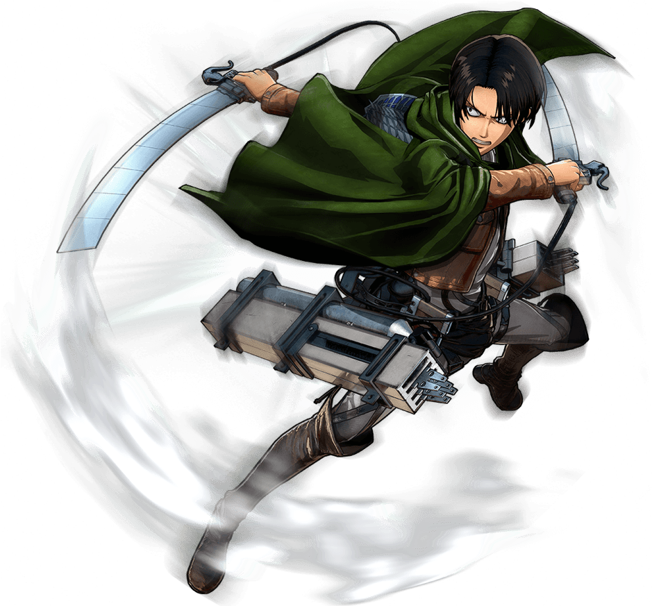
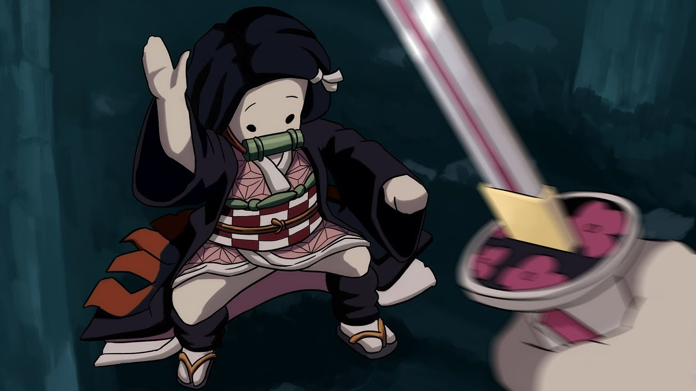
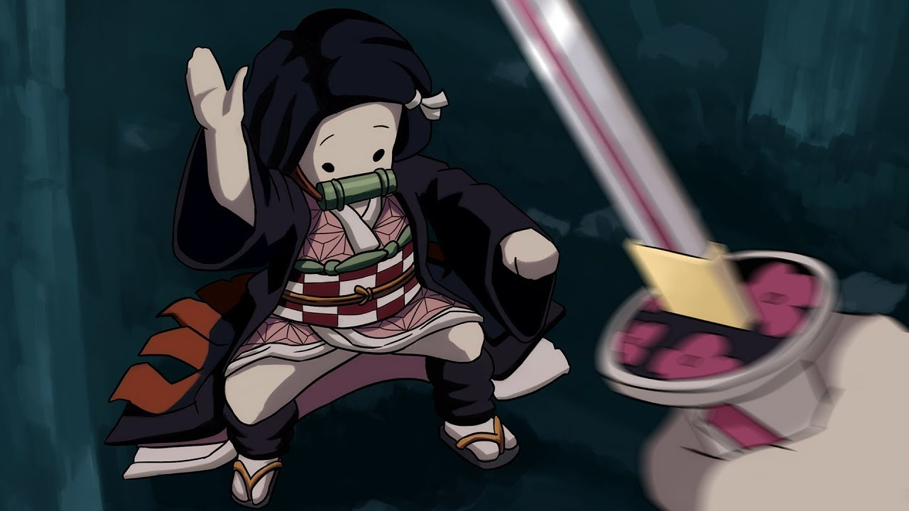

Mon loisir : Regarder des animes
Beaucoup de gens aiment regarder des films, des séries ou aller ou cinéma. Moi je préfère regarder des animes.
L'histoire des animes
Un anime ou animé (アニメ)Écouter la prononciation, également appelé parfois japanimenote ou japanimationnote, désigne une série d'animation ou un film d'animation en provenance du Japon.
C'est le diminutif du mot animēshon (アニメーション), lui-même transcription de l'anglais animation.
Alors que les toutes premières animations japonaises connues datent de 19174 et qu'un bon nombre de dessins animés originaux sont produits durant les décennies suivantes, la caractéristique et le style anime se développent durant les années 1960 (notamment grâce aux travaux d'Osamu Tezuka) et se popularisent hors des frontières du Japon durant les années 1970 et 1980.
L’anime, comme le manga, possède une large audience au Japon et est facilement reconnaissable dans le monde entier. Les distributeurs peuvent diffuser un anime par le biais de chaînes télévisées, par vidéo, au cinéma ou encore en streaming.
Un peu de vocabulaire
Kodomo = manga destiné aux jeunes enfants
Shonen = manga destiné aux jeunes adolescents
Shojo = manga destiné aux jeunes adolescentes
Yuri = romanceentre femmes
Yaoi = romance entre hommes
Magical girl = Sous-genre du Shojo. Désigne un manga mettant en scène des jeunes filles combattant le Mal à l'aide de pouvoirs magiques
Seinen = manga destiné aux jeunes hommes adultes
Dojinshi = production amateur, parodie
Ecchi = manga érotique
Hentai = manga pornographique
Manwha = bande dessinée coréenne
Manhua = bande dessinée chinoise
Anime = série télévisée ou film d'animation japonaise
Mes animes préférés :
1. Jibaku Shounen Hanako Kun
2. My Hero Academia
3. L'attaque des Titans
4. Angel of Death
5. Noragami
6. Demon Slayer
7. The promised Neverland
8. Death Note
9. Moi quand je me réincarne en slime
10. Sword Art Online
 
